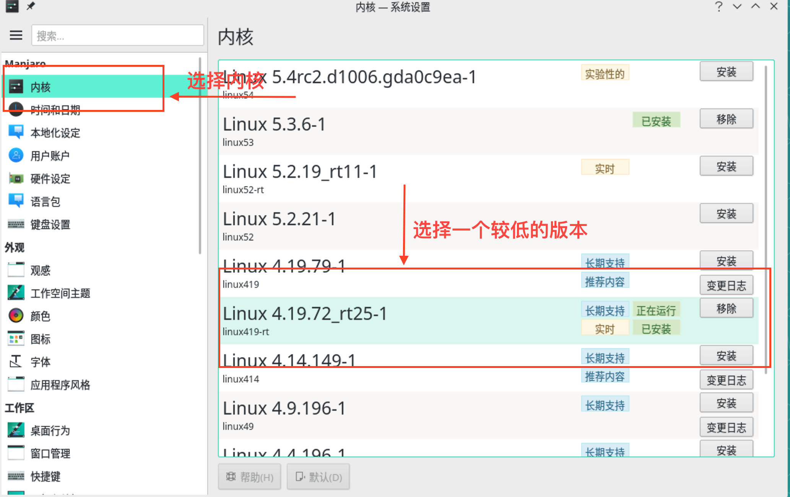
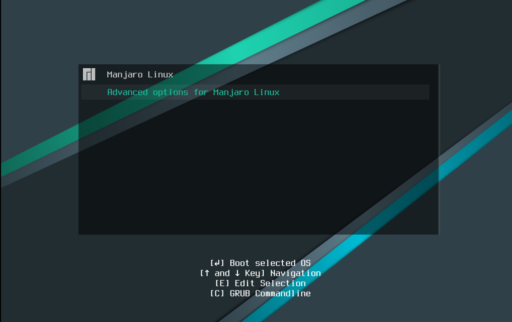
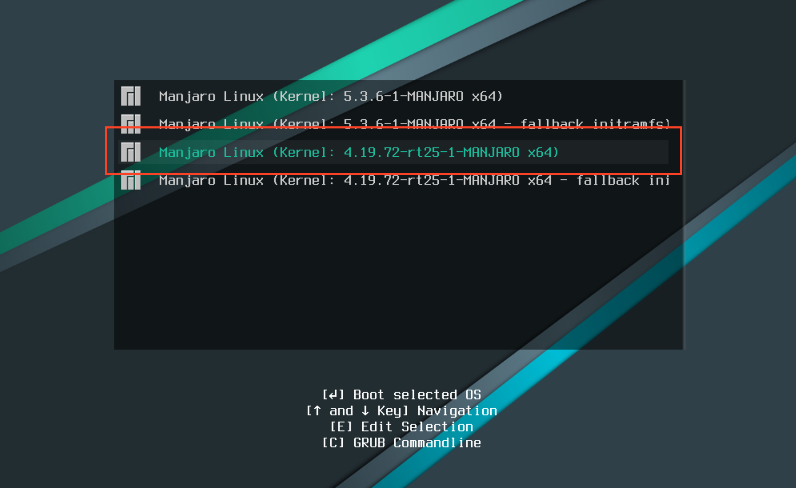

Parallels tools 安装失败
文章目录
缘由
最近做实验，需要一个新的 Linux 环境来折腾，于是就去下载了最新版的 Manjaro 。
按照常规安装好虚拟机之后，我还会安装 Parallels tools 来更好的体验 Linux 。 Parallels tools 可以方便的在宿主机和虚拟机之间拷贝文件和共享文件，当然还有最重要的就是显示效果会好上一大截，鼠标移动不会卡顿，窗口的缩放可以自适应等，所以没有理由不装。
在安装的过程中碰到了安装失败的情况，下面记录一下解决的过程。
错误
|
|
从提示中得到的消息是不能构建内核模块，于是我猜测是内核版本比较新，所以构建失败了。我打开之前装好了 Parallels Desktop tools 的虚拟机，查看一下内核，发现旧的内核版本为 Linux 4.19.79-1 而我最新下载的内核是 Linux 5.3.6-1 。抱着试一试的心理，发现有效，记录一下。
安装低版本内核
首先打开系统设置，找到内核，查看正在运行的内核版本，如果你的内核只有一个 5.x 的话，安装失败可能就是这个原因。
这时候选择一个较低版本的内核，我这里选择的是 Linux 4.19.72_rt25-1 点击安装，等待一会安装完毕。选择内核建议选择有长期支持的。

选择新安装的内核
安装好新内核后重启系统，按住上下键，出现如下页面，选择 Advanced options for Manjaro Linux 回车

然后选择我们刚才新安装的内核启动，启动之后重新安装 Parallels tools 。

总结
想起最开始安装 Parallels tools 的时候各种报错，摸不着头脑，用搜索引擎各种查资料，有时候能成功，有时候搞半天头不行，纯粹碰运气。当时在 Ubuntu 下，就连 Parallels tools 在哪个地方都找不到。
后来折腾各种发行版，在 open SUSE 上又折腾老半天，才意外在某篇文章中发现一点端倪，侥幸解决了。
最后现在出现问题，不靠搜索引擎，看错误日志就能猜出个大概，挺开心的。
作为一个开发，经常在各种环境中切换，其实很花时间，有时候不知道这样折腾值不值得，但是折腾成功后的又那么舒畅。花费在这上面的时间虽然很多，但是也学到了不少经验和知识。搞开发的都有一个瞎折腾的心。🙂